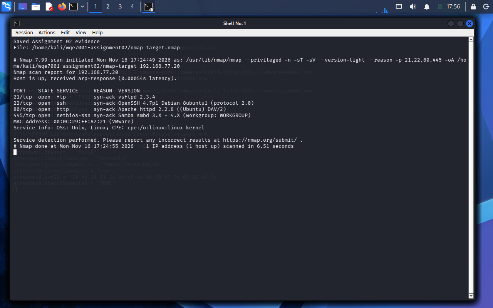

Project 02 · Service discovery
Scoped Nmap service scan
A four-port scan of one owned VM produced service leads for investigation, not a finding that a vulnerability was exploitable.
Objective
Identify which services the owned Metasploitable 2 VM reported on selected TCP ports and record the output so another reader could check each claim.
Environment and tools
The scan ran from Kali Linux 2026.3 with Nmap 7.99 against 192.168.77.20 on the verified private VMware LAN segment. The target was an intentionally vulnerable training VM owned for this lab. Only ports 21, 22, 80 and 445 were in scope. No internet, employer or third-party host was scanned.
Method
- Confirmed the two guest addresses, routes and local reachability before the scan.
- Ran a TCP connect scan with light service-version detection, disabled reverse DNS, and requested reasons for each port state. The following is a portable equivalent of the recorded command, with its local output path shortened for publication:
nmap -n -sT -sV --version-light --reason \
-p 21,22,80,445 -oA nmap-target 192.168.77.20- Saved the normal, XML and grepable outputs. Compared the displayed result with the saved file before writing the findings.
Results and evidence
Nmap reported one host up by ARP response and the following four selected ports as open. The scan completed in 6.51 seconds. The software names below are Nmap's reported service and version results.
| Port | Reported service | What the result supports |
|---|---|---|
| 21/tcp | FTP, vsftpd 2.3.4 | An FTP service responded. Anonymous access was not tested. |
| 22/tcp | SSH, OpenSSH 4.7p1 Debian 8ubuntu1 | An SSH service responded with this reported version string. |
| 80/tcp | HTTP, Apache httpd 2.2.8 | An HTTP server responded. Hosted applications were not identified. |
| 445/tcp | netbios-ssn, Samba smbd 3.X–4.X | An SMB-related service responded; Nmap gave a broad version range. |


- Sanitised scan-output excerpt
- Pre-scan route and reachability excerpt
- Evidence provenance and screenshot hashes
Interpretation and next step
The results show services on four ports. They do not establish exact installed packages, enabled features, accessible shares or a confirmed CVE. The Samba range is especially broad. I would next inspect the owned target's local package and service configuration, then compare those details with a relevant advisory before making a vulnerability claim. I would also record which ports were not scanned, since this limited run cannot describe the whole host.
No exploitation was attempted. The published screenshot and text excerpt contain only this owned lab target and the selected scan output.